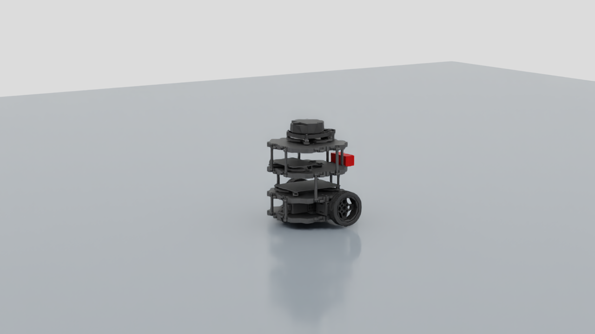

A free chassis that settles stably
The robot base is free, using imported colliders and joints. First verify stable floor contact. No ROS2, Isaac Lab or navigation policy is enabled in this test scene.
DEVLOG · 2026.09.24 · OMNIVERSE / ISAAC SIM
After rebuilding the room in Blender, test a robot that settles, drives and is blocked by walls in Isaac Sim. The environment and robot pipelines meet in one physics scene.

A separate corridor test references the existing room and robot USDs, preserving the originals. The robot is shown at the test start.
01 / TWO PIPELINES
Environment: photos/LiDAR → Blender → USD → Isaac Sim. Robot: the TurtleBot3/NavBot URDF previously prepared for Blender, with completed visual meshes, imported through Isaac Sim's URDF Importer.
Appearance alone does not make a simulated robot. URDF links, joints, mass, inertia, colliders and limits define the dynamics. Preserve these when improving the visual asset.
Previous: corridor USD, cube drop and physics-material bounce test →
02 / ROBOT IMPORT & DRIVE

Verified 4 visual mesh instances, 6 rigid bodies, 6 colliders, 2 wheel revolute joints and 3 fixed joints. Sensor housings are visible, but live LiDAR/camera data is not yet connected.
The robot base is free, using imported colliders and joints. First verify stable floor contact. No ROS2, Isaac Lab or navigation policy is enabled in this test scene.
Both wheels target 3 rad/s. Flat-ground displacement is about 0.267 m, with 0.33° heading change. Zero wheel speeds and observe settling.
Left wheel −2 rad/s, right +2 rad/s: about 104.45° left rotation and 1.5 mm position drift. This checks differential drive, not path tracking.
03 / CORRIDOR PHYSICS
Create navbot_corridor_test.usda, disable the flat-test Ground and use corridor Floor/ Walls colliders. Spawn facing +Y, settle and drive, then separately orient toward the side wall to test blocking.
1280 × 720 / 30 FPS. Two separate runs are joined: forward then stop; reset then drive into a wall. The orientation change is a reset between tests, not continuous avoidance.
A downward physics raycast hits Floor at Z = 0. After settling, base_link is about 0.010 m high; no floor penetration was observed during this test.
The measurement script recorded about 4.07 seconds, 0.376 m travel and less than 1 mm lateral drift. The video is a separate demonstration run; figures come from the report.
A side raycast hits Walls at X ≈ 0.248 m. Driving toward +X stops base_link near X ≈ 0.169 m; continued drive causes little displacement, with no observed penetration.
The wall physically blocks the robot; no avoidance controller is running. Only one spawn, a short corridor segment and one wall were tested. Whole-room collision coverage and the earlier cube penetration remain unverified.
04 / THE DETOUR
Two user-triggered Play/Run crashes logged usd_usd.dll access errors, which do not identify the root cause alone. A separate script started playback before scene loading and crashed in debug_draw; this timing error is distinct evidence.
Asynchronous rendering separates drawing and simulation threads. Isaac Sim Full automatically changes related settings between stopped, paused and playing states.
Disable automatic asynchronous switching, then set asyncRendering and asyncRenderingLowLatency to false. Changing only one can be overwritten by the automatic switching logic.
Five independent Play/Stop cycles passed after the change. Flat-ground and corridor tests also completed without another observed crash.
Synchronous rendering may avoid the trigger; it does not establish the root cause or a permanent fix. Robot mass, colliders and wheel settings were unchanged.
05 / RECORDING & TIMING
The first corridor script estimated time from viewport updates and failed the distance criterion. A new top layer also lacked an explicit timeline. Add the range and 60 time codes/s, measure actual simulation time, then retest. Preserve the initial failure instead of lowering the threshold.
The cube test used Windows screen recording; this article captures a selected camera through omni.kit.capture.viewport and omni.videoencoding, then joins and labels clips with FFmpeg. Motion is physics-driven. Capture records it; scripts control drive/stop timing.
Scenes, validation scripts, reports and source video are saved in the project. Restore the spawn pose and zero wheel speeds for the next session.
06 / REPRODUCE WITH PYTHON
Public scripts remove machine-specific paths and include async Script Editor entry points. All three ran in Isaac Sim 6.1 before release; motion/collision assertions passed and two MP4s were regenerated. They require the project's scenes and prim hierarchy; models are excluded.
Download three Python scripts + README
Run in navbot_drive_test.usda. Command wheel speeds, read base_link through the tensor API, measure travel and heading, then zero wheel speeds and Stop.
Download control_navbot.py ↓Run in navbot_corridor_test.usda. Raycast to Floor and measure height, travel and wall-stop displacement. This checks local blocking, not contact force.
Download test_corridor_collision.py ↓In the corridor, omni.kit.capture.viewport and omni.videoencoding produce 30 FPS MP4s: 8 seconds straight, 12 seconds toward a wall. Timestamped files go to tests/physics/videos.
Download record_corridor.py ↓Save edits, Stop and open the appropriate scene. Load one complete script in Window → Script Editor and Run. The async entry point is included; do not wrap it again or launch competing tests. Use Isaac Sim's Python environment, not system Python.
Keep synchronous-rendering startup settings and a timeline of at least 20 seconds. Derive output paths from the current isaacsim/scenes file. Scripts update reports but do not save USD automatically; other robots need adjusted prim paths, starts and thresholds.
07 / TRY IT IN THE UI
Open Window → Animation → Timeline; enable omni.kit.window.timeline if needed. Learn wheel control on the flat scene first. Stop ends and resets; Pause holds the current state for inspection.
In /World/NavBot/Physics, select wheel_left_joint and wheel_right_joint and find angular Drive Target Velocity. This USD field uses deg/s: about 172 on both wheels corresponds to 3 rad/s forward; −115 left and +115 right turns left. Zero both to stop. Keep existing damping/force and check available space first.
Enable physics collider visualization in viewport Show. Expand Corridor → Collision, select Floor or Walls and check Collision Enabled. Hiding visuals alone does not reveal hidden collision geometry.
Let the robot settle and drive slowly. For the separate wall test, Stop, change NavBot Z rotation from 90° to 0°, and drive toward +X. Finish with zero wheel speeds, Stop and restore 90°. No autonomous avoidance runs here.
Open Window → Rendering → Movie Capture, enabling omni.kit.window.movie_capture if needed. Select /World/Camera, Seconds range 0–8, 30 FPS, 1280 × 720, RTX Real-Time 2.0 or Use Current, MP4 output and a new filename. Click Capture Sequence.
Movie Capture records but does not replay the controller. Zero wheel speed means no motion. Use the script for exact drive-then-stop behavior; Windows screen recording suits menus and interaction demos.
Update: RTX LiDAR setup, calibration and six navigation tests →
Next, check collision coverage, connect LiDAR/cameras, and validate control, sensing and navigation. Reusing the Gazebo rule-plus-PPO correction policy and simulator comparisons remain future work at this stage.
Back to Development Log